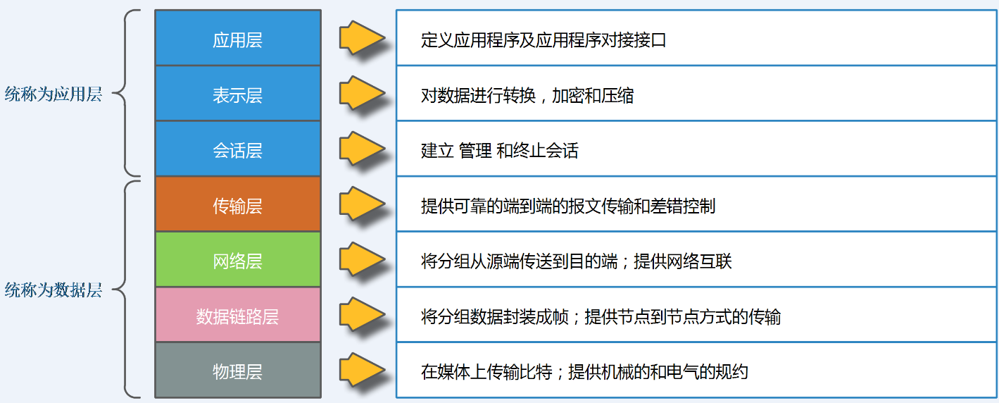
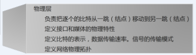
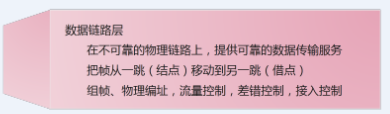
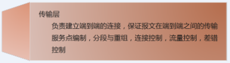

之前也写过一篇网络基础，写了下对网络分层的理解，现在看来，当时的理解简单了，不够深入，为了彻底理解网络基础，特地再写一篇详细的，加深记忆和理解。
1.1、OSI协议栈
OSI是Open System Interconnection的缩写，意为开放式系统互联。国际标准化组织（ISO）制定了OSI模型，该模型定义了不同计算机互联的标准，是设计和描述计算机网络通信的基本框架。OSI模型把网络通信的工作分为7层，分别是物理层、数据链路层、网络层、传输层、会话层、表示层和应用层。
请看下面几幅图：

物理层(Physical Layer)
传输数据格式：比特(bit)流；
主要功能和连接方式：建立、维护和取消物理连接；
典型设备：光纤、同轴电缆、双绞线、网卡、中继器、集线器等；
说明：在OSI参考模型中，物理层（Physical Layer）是参考模型的最低层，也是OSI模型的第一层。物理层的主要功能是，利用传输介质为数据链路层提供物理连接，实现比特流的透明传输。物理层的作用是实现相邻计算机节点之间比特流的透明传送，尽可能屏蔽掉具体传输介质和物理设备的差异。使其上面的数据链路层不必考虑网络的具体传输介质是什么。”透明传送比特流”表示经实际电路传送后的比特流没有发生变化，对传送的比特流来说，这个电路好像是看不见的。

数据链路层(Data Link Layer)
传输数据格式： 将比特信息封装成数据帧(Frame)；
主要功能和连接方式：在物理层上建立、撤销、标识逻辑链接和链路复用 以及差错校验等功能。通过使用接收系统的硬件地址或物理地址来寻址；
典型设备：网桥、交换机；
说明：数据链路层（Data Link Layer）是OSI模型的第二层，负责建立和管理节点间的链路。该层的主要功能是通过各种控制协议，将有差错的物理信道变为无差错的、能可靠传输数据帧的数据链路。
该层通常又被分为介质访问控制（MAC）和逻辑链路控制（LLC）两个子层。
MAC子层的主要任务是解决共享型网络中多用户对信道竞争的问题，完成网络介质的访问控制；
LLC子层的主要任务是建立和维护网络连接，执行差错校验、流量控制和链路控制。
数据链路层的具体工作是接收来自物理层的位流形式的数据，并封装成帧，传送到上一层；同样，也将来自上层的数据帧，拆装为位流形式的数据转发到物理层；并且，还负责处理接收端发回的确认帧的信息，以便提供可靠的数据传输。

网络层(Network Layer)
传输数据格式：分割和重新组合数据包(Packet)；
主要功能和连接方式：基于网络层地址（IP地址）进行不同网络系统间的路径选择
典型设备：网关、路由器；
说明：网络层（Network Layer）是OSI模型的第三层，它是OSI参考模型中最复杂的一层。其主要任务是通过路由选择算法，为报文或分组通过通信子网选择最适当的路径。该层控制数据链路层与传输层之间的信息转发，建立、维持和终止网络的连接。具体地说，数据链路层的数据在这一层被转换为数据包，然后通过路径选择、分段组合、顺序、进/出路由等控制，将信息从一个网络设备传送到另一个网络设备。一般地，数据链路层是解决同一网络内节点之间的通信，而网络层主要解决不同子网间的通信。例如在广域网之间通信时，必然会遇到路由（即两节点间可能有多条路径）选择问题。
在实现网络层功能时，需要解决的主要问题如下：
寻址：数据链路层中使用的物理地址（如MAC地址）仅解决网络内部的寻址问题。在不同子网之间通信时，为了识别和找到网络中的设备，每一子网中的设备都会被分配一个唯一的地址。由于各子网使用的物理技术可能不同，因此这个地址应当是逻辑地址（如IP地址）。
交换：规定不同的信息交换方式。常见的交换技术有：线路交换技术和存储转发技术，后者又包括报文交换技术和分组交换技术。
路由算法：当源节点和目的节点之间存在多条路径时，本层可以根据路由算法，通过网络为数据分组选择最佳路径，并将信息从最合适的路径由发送端传送到接收端。
连接服务：与数据链路层流量控制不同的是，前者控制的是网络相邻节点间的流量，后者控制的是从源节点到目的节点间的流量。其目的在于防止阻塞，并进行差错检测。
传输层(Transport Layer)
传输数据格式：数据组织成数据段(Segment)；
主要功能和连接方式： 用一个寻址机制来标识一个特定的应用程序(端口号)；
典型设备：终端设备(PC、手机、平板等)；
说明：OSI下3层的主要任务是数据通信，上3层的任务是数据处理。而传输层（Transport Layer）是OSI模型的第4层。因此该层是通信子网和资源子网的接口和桥梁，起到承上启下的作用。该层的主要任务是：向用户提供可靠的端到端的差错和流量控制，保证报文的正确传输。传输层的作用是向高层屏蔽下层数据通信的细节，即向用户透明地传送报文。该层常见的协议：TCP/IP中的TCP协议、Novell网络中的SPX协议和微软的NetBIOS/NetBEUI协议。
传输层提供会话层和网络层之间的传输服务，这种服务从会话层获得数据，并在必要时，对数据进行分割。然后，传输层将数据传递到网络层，并确保数据能正确无误地传送到网络层。因此，传输层负责提供两节点之间数据的可靠传送，当两节点的联系确定之后，传输层则负责监督工作。综上，传输层的主要功能详解：
传输连接管理：提供建立、维护和拆除传输连接的功能。传输层在网络层的基础上为高层提供“面向连接”和“面向无接连”的两种服务。
处理传输差错：提供可靠的“面向连接”和不太可靠的“面向无连接”的数据传输服务、差错控制和流量控制。在提供“面向连接”服务时，通过这一层传输的数据将由目标设备确认，如果在指定的时间内未收到确认信息，数据将被重发。
监控服务质量。

会话层(Session Layer)
传输数据格式：数据DTPU；
主要功能和连接方式：会话层连接到传输层的映射；会话连接的流量控制；数据传输；会话连接恢复与释放；会话连接管理、差错控制；
典型设备：终端设备(PC、手机、平板等)；
说明：会话层（Session Layer）是OSI模型的第5层，是用户应用程序和网络之间的接口，主要任务是：向两个实体的表示层提供建立和使用连接的方法。将不同实体之间的表示层的连接称为会话。因此会话层的任务就是组织和协调两个会话进程之间的通信，并对数据交换进行管理。用户可以按照半双工、单工和全双工的方式建立会话。当建立会话时，用户必须提供他们想要连接的远程地址。而这些地址与MAC（介质访问控制子层）地址或网络层的逻辑地址不同，它们是为用户专门设计的，更便于用户记忆。域名（DN）就是一种网络上使用的远程地址。会话层的具体功能详解：
会话管理：允许用户在两个实体设备之间建立、维持和终止会话，并支持它们之间的数据交换。例如提供单方向会话或双向同时会话，并管理会话中的发送顺序，以及会话所占用时间的长短。
会话流量控制：提供会话流量控制和交叉会话功能。
寻址：使用远程地址建立会话连接。l
出错控制：从逻辑上讲会话层主要负责数据交换的建立、保持和终止，但实际的工作却是接收来自传输层的数据，并负责纠正错误。会话控制和远程过程调用均属于这一层的功能。但应注意，此层检查的错误不是通信介质的错误，而是磁盘空间、打印机缺纸等类型的高级错误。
表示层(Presentation Layer)
传输数据格式：数据PTPU；
主要功能和连接方式：数据表示、数据安全、数据压缩；
典型设备：终端设备(PC、手机、平板等)；
说明：表示层（Presentation Layer）是OSI模型的第六层，它对来自应用层的命令和数据进行解释，对各种语法赋予相应的含义，并按照一定的格式传送给会话层。其主要功能是“处理用户信息的表示问题，如编码、数据格式转换和加密解密”等。表示层的具体功能如下：
数据格式处理：协商和建立数据交换的格式，解决各应用程序之间在数据格式表示上的差异。
数据的编码：处理字符集和数字的转换。例如由于用户程序中的数据类型（整型或实型、有符号或无符号等）、用户标识等都可以有不同的表示方式，因此，在设备之间需要具有在不同字符集或格式之间转换的功能。
压缩和解压缩：为了减少数据的传输量，这一层还负责数据的压缩与恢复。
数据的加密和解密：可以提高网络的安全性。
应用层(Application Layer)
传输数据格式：数据ATPU；
主要功能和连接方式：网络服务与使用者应用程序间的一个接口；
典型设备：终端设备(PC、手机、平板等)；
说明：应用层（Application Layer）是OSI参考模型的最高层，它是计算机用户，以及各种应用程序和网络之间的接口，其功能是直接向用户提供服务，完成用户希望在网络上完成的各种工作。它在其他6层工作的基础上，负责完成网络中应用程序与网络操作系统之间的联系，建立与结束使用者之间的联系，并完成网络用户提出的各种网络服务及应用所需的监督、管理和服务等各种协议。此外，该层还负责协调各个应用程序间的工作。
应用层为用户提供的服务和协议有：文件服务、目录服务、文件传输服务（FTP）、远程登录服务（Telnet）、电子邮件服务（E-mail）、打印服务、安全服务、网络管理服务、数据库服务等。上述的各种网络服务由该层的不同应用协议和程序完成，不同的网络操作系统之间在功能、界面、实现技术、对硬件的支持、安全可靠性以及具有的各种应用程序接口等各个方面的差异是很大的。应用层的主要功能如下：
用户接口：应用层是用户与网络，以及应用程序与网络间的直接接口，使得用户能够与网络进行交互式联系。
实现各种服务：该层具有的各种应用程序可以完成和实现用户请求的各种服务。
总结：
OSI七层模型太过于理想化，现实的生产环境下比较少用上，大部分实际应用都是按照TCP/IP协议栈来设计实现。
在7层模型中，每一层都提供一个特殊的网络功能。从网络功能的角度观察：下面4层（物理层、数据链路层、网络层和传输层）主要提供数据传输和交换功能，即以节点到节点之间的通信为主；第4层作为上下两部分的桥梁，是整个网络体系结构中最关键的部分；而上3层（会话层、表示层和应用层）则以提供用户与应用程序之间的信息和数据处理功能为主。简言之，下4层主要完成通信子网的功能，上3层主要完成资源子网的功能。